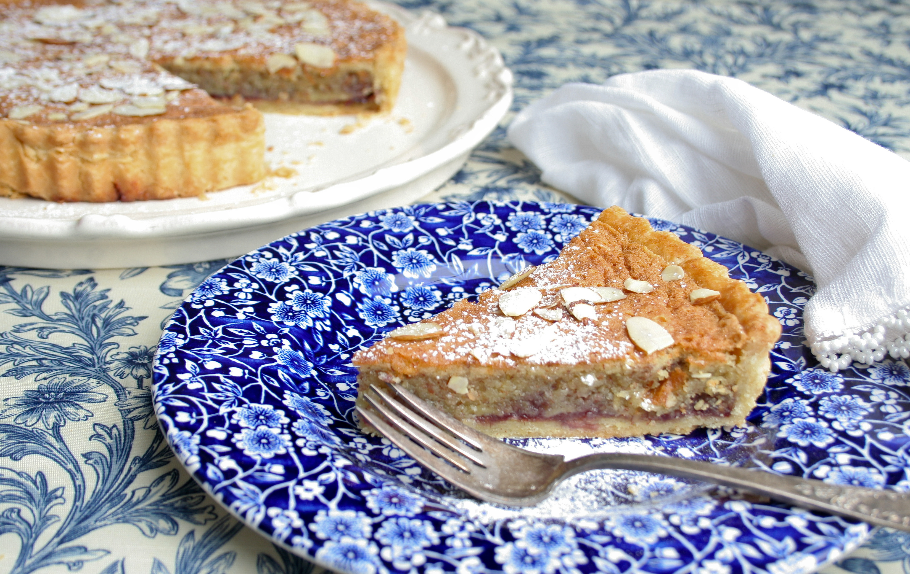

Bakewell Tart
Bakewell Tart

Ingredients
Crust
- 8 tablespoons butter
- 3/4 cup powdered sugar
- 3 egg yolks
- 1 3/4 cup flour
- 1 pinch salt
Custard Filling
- 5 egg yolks
- 1 egg white
- 3/4 cup sugar
- 8 tablespoons melted butter
- 1/4 cup almond flour
Jam Filling
Instructions
Crust
- In a large mixing bowl, cream together the 8 tablespoons of cold
butter and sugar until it forms a nice fluffy paste.
- Add the 3 egg yolks, and beat until it looks smooth.
- Sift in the flour and incorporate slowly until the dough looks crumbly.
- Turn dough out onto parchment.
- Place another sheet of parchment on top of the dough.
- Use a rolling pin to flatten the dough out into a thin disc.
- Chill in the fridge for 30 minutes.
- Line a greased pie tin with the dough.
- Place the pie tin (with dough) in the freezer for 30 minutes.
- Preheat oven to 400 degrees F.
- Place pie weights on top of the dough.
- Bake for 15 minutes.
- Remove weights and bake until edges are golden brown (about 5
to 10 minutes).
- Remove from oven and let it cool completely.
Custard Filling
- Heat oven to 325 degrees F.
- Beat the 5 egg yolks and 1 egg white in a large mixing bowl until
smooth.
- Mix in sugar and melted butter until smooth.
- Mix in almond flour until smooth.
Putting it all together
- Allow the pie crust to fully cool.
- Spread jam on pie crust.
- Slowly pour custard on top of the jam layer.
- (Optional) Decorate top with almond flakes.
- Bake in oven for 35 to 40 minutes until custard has set.